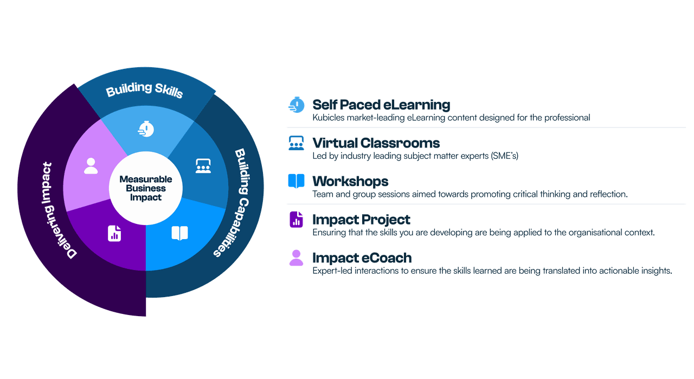

Academies+ by Kubicle
For nearly a decade, Kubicle has set new benchmarks in corporate training, empowering over one million learners across more than 1,000 enterprises worldwide. The mission has always been to foster valuable, measurable skills that drive organizational success.
However, teaching new skills alone isn’t enough to create lasting change. To bridge the gap between learning and real-world impact, businesses require more robust, integrated approaches. That’s why Academies+ has been developed—an innovative blended learning program designed to transform skill acquisition into tangible outcomes.
Why Blended Digital Learning?
eLearning alone is a proven tool for effectively upskilling large groups. Organizations leveraging Kubicle’s solutions often see significant performance improvements after just a few hours of tailored training. However, learning a new skill is only half the battle. The real challenge is ensuring those skills are applied effectively within an organization’s unique context to maximize its impact.
In recent times, an additional challenge has emerged: the rapid acceleration of change, especially in technology. The production timelines for eLearning courses often struggle to keep pace with product development, nowhere more obviously than in the domain of Generative AI. As a result, a course being developed today may already be outdated by its release—regardless of how short the production cycle is.
Blended learning tackles these challenges by merging the advantages of eLearning with hands-on, real-world applications. Likewise, virtual classrooms led by industry-leading SMEs offer an effective platform for delivering consistently up-to-date content. This approach enhances knowledge retention while ensuring accuracy and smooth integration into daily workflows.
How It Works: The Academies+ Formula
Self-paced eLearning + Virtual Classrooms & Workshops + Impact Coaching + Impact Project = Maximised Organizational Impact
Our unique design of blended learning interventions are aligned to one thing. Impact.
Learners start by exploring foundational concepts at their own pace with self-guided eLearning. This flexible format allows them to absorb and reflect on the material before moving on to interactive virtual classrooms. Here, subject matter experts and peers provide fresh insights, helping to deepen understanding through discussion and collaboration.
The experience continues with hands-on workshops, where learners put their new skills to the test in a practical setting, guided by experts. But the real differentiator of Academies+ lies in its final components: the Impact Project and the Impact Coach.
The Impact Project is where learning meets real-world impact. Through the Impact Project, learners will address genuine business challenges and make a measurable difference. With the support of an Impact Coach, participants develop a project tailored to their organization’s needs, applying their newly acquired skills to solve genuine problems and deliver tangible results.
With Kubicle’s Academies+, we don’t just train—we transform, turning learning into a strategic asset for your organization.

Launching Now: AI for Business Professionals Academy+
In 2025, Kubicle will roll out a series of Academies+ programs addressing critical skill gaps in organizations. The first program, AI for Business Professionals Academy+, is now open for enrollment.
This program is designed to equip leaders and professionals with the skills to harness AI effectively in their roles. As regulations like the EU AI Act approach, organizations must meet AI literacy standards. This program prepares participants to not only understand AI principles but also apply them to improve productivity and efficiency.
By the end of the course, participants will view AI not as a buzzword but as a practical tool for solving business challenges and driving innovation.
Want to Learn More?
If you’re interested in discovering how Academies+ by Kubicle can help transform your organization’s capabilities, visit our website or get in touch with our team today.
With Academies+, we’re not just teaching skills—we’re building the future of work through guaranteed impact.